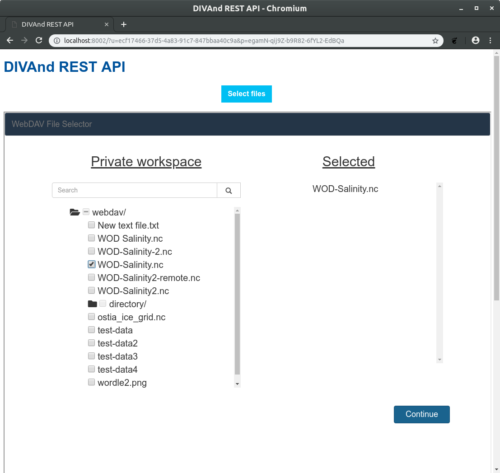

Online DIVAnd
Where we are where we go


A work by
Alexander Barth
Charles Troupinand
the VRE team


1. How do we perform data interpolation?
Deployment in the VRE
- Jupyter-hub to manage multiple users
- Docker container for the deployment
- Management/orchestration using Kubernetes
DIVAnd REST API
docker pull abarth/divand_rest
docker run --detach --name=divand_rest_container -it -p 8002:8002 abarth/divand_rest
http://localhost:8002/ in the web browser
2. VRE developments
Hamburg Hackaton (September 3-5, 2019)

Current status of the component?
DIVAnd running in isolation
DIVAnd Jupter-hub container
DIVAnd API and file selector
Integration with other VRE components
Open issues
- Passing user-credentials (B2DROP username, password, WebDAV URL) to the container
- Single-sign-on approach to access the individual services
(now hard-coded) - B2DROP handling ~20 users downloading/uploading a file?
"B2DROP is not for development and testing" - Implementing the WebDAV put and get requests in the container
- Updating the file selector for the GUI interface of DIVAnd
- Testing that the VRE dashboard can start containers
Open issues: how to tackle?
WebDAV put and get requests
→ Alex
File selector for the GUI interface of DIVAnd
→ in collaboration with Sebastian
Others: dependent on EUDAT for the integration
DIVAnd API and file selector
File upload/download using WebDAV
Configure WebDAV environment variables
ENV["WEBDAV_USERNAME"] = "app-username"
ENV["WEBDAV_PASSWORD"] = "app-password"
ENV["WEBDAV_URL"] = "https://b2drop.eudat.eu/remote.php/webdav"
Download the file to the selected folder
get("Adriatic/AdriaticSea_SDC.txt", "Adriatic/AdriaticSea_SDC.txt")
WEBDAV_USERNAME
WEBDAV_PASSWORD
WEBDAV_URL should be set by kubernetes (not by the user)